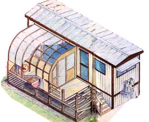
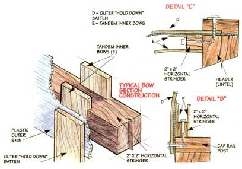
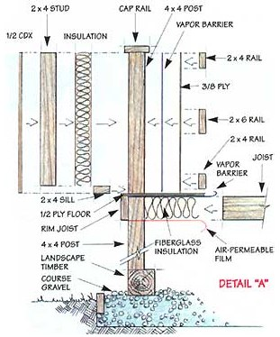

BUILDING NEW SPACES
Mount a mini greenhouse on a portable deck.
MOTHER's newest adventure in practical, low-cost country living is the renovation (and eventual relocation) of an old, but sound and serviceable, house trailer. (That's what a "mobile home" was called back when our '79 Skyliner was built.) Built on a river valley hillside, the trailer's west elevation (the front) is more than 4' above the ground and the old, wooden front steps are rickety.
There's also a sliding-glass door in the living room with nothing in front but a 4' drop and a hill that falls to the river. No insurance company will underwrite a hazard like that, so the first major improvement we'll undertake is an 8'x20' deck along the west side between front door and slider. We'll top the deck at the front stairs with a roofed entry, and where it runs in front of the 8' wide slider, with an 8'x12' combination greenhouse/screened sun-porch: a garden room.
We intend to use the trailer as a truly mobile home the way many of M OTHER'S readers have over the years. They buy a trailer that's sound and fully functional-but old and inexpensive-and live in it on the cheap as they save every penny to buy their piece of rural land. Then they mount the trailer's wheels, haul it to the country, and live in it while they build that dream log cabin.
But ...how to build an all-season deck/garden room that's as mobile as a trailer or motor coach? Most published sources recommend decks that satisfy building codes of the elite suburbs that surround major metro areas: footings a yard or more deep, heavy stud-built construction, and one side permanently fixed to the house.
The answer: design deck and sun space-to-be that are code-designated as "temporary" or "portable" structures ...just like gazebos, privies, tent-screen rooms, wood-framed sheds, chicken houses, pole barns, and metal lawn buildings that are not attached to a permanent structure. They can be moved easily and are code-exempt (though some may be prohibited by zoning or public health ordinances).
We found the trailers foundation to be anything but permanent. The steel-beam frame simply rested on concrete blocks that were half-buried in a thick bed of gravel. As it does under railroad tracks, the loose gravel not only drains away rainwater but will move over itself and (to a degree) equalize movement of the trailer caused by differential frost-heaving of the ground under it during cold weather. It was obvious to us (and to our common-sensical country, building code officials) that a deck/garden room built on model-code-approved deep footings would not heave (however gently) along with the trailer. The two would part company-literally pulling apart-in time. So we determined to bed our addition in a gravel base too. But (copying practice we found in the best of our local trailer installations), we'd give the platform more wind-resisting weight by building it atop heavy creosote-laced landscaping timbers set in good-draining gravel just like railroad track.
The plan for our base structure is simplicity itself-based on the several decks, porches, and garden houses we've built over the years. Vertical posts, fastened to landscaping timbers bedded in gravel, are arrayed in a rectangle determined by the size of the garden room's floor. Rim joists that form the outer frame are bolted to the inside of posts. Joists are hung from steeljoist hangers that are fastened to the inside of the rim joists. Plywood sheets are laid over joists to serve as a floor.
If post tops are 4x4 timbers and the platform is less than 5' off the ground, rim joists are made from 2x10s, joists of 2x8s spaced 16" apart, and the plywood floor is 1/2" or 3/4"-thick plywood. The deck can be 8', 10', or 12' deep-as long as you like-and will support any household load it might encounter.
For a heavy structure, or for commercial loads, use 6x6 posts. Double rim joists and increase joist size to 2x10s spaced 16" apart.
For a lightweight garden room and, light use, you can use 2x8s all around and (theoretically) space them 24" apart. But don't; stay with timeproven 16" floorjoist intervals.
For the floor, use at least 1/2" exterior-glued A/C (smooth one side) ply. Or for easier handling, lay two sheets of 3/8"-ply one over another, with a layer of waterproof, mold-deterring creosote building paper between.
To form a railing around open areas of the platform, or a solid half-wall to support a sturdy and well-insulated garden room, posts are not cut off at floor level, but extended another 30+". To create a wall under the garden house, insulation is sandwiched between sheets of plywood between posts. In open parts of the deck, a cap rail and horizontal members are fastened to the posts.
Don't fasten with nails, but use removable rust-resistant galvanized drywall-type self-tapping screws.
HERE IS HOW WE'LL PUT IT UP
Base Timbers for an 8'x20' Platform
1. Remove sod and top soil in a 10'x22' rectangle down to firm subsoil (about 6" deep). Dump, rake level, and compact an 8" layer of crushed rock or coarse gravel.
2. Sink landscape timbers in the gravel so:
a. The house-side edges of the house-side tim bers are parallel to the house wall and at least 2" out from the house siding, and
b. Their tops are all on a level plane that is horizontal at each long edge, but that slopes slightly down and away from the house. A 2" fall is fine and will guarantee that rainwater will drain off the exposed deck area.
c. Their outer margins describe a perfect rect angle that is:
-19'-7" long, and
- 7'-9" deep (so six sheets of ply will fit between posts, with 1" to 2" of play at the rear.)
3. Using galvanized framing plates, connect all joints between timbers.
1. For house-side posts (that won't support a railing) cut six 4x4 wood timbers long enough to extend from top of base timber to 6" below top of building's floor (or sill-top of doors opening onto platform).
2. For railed posts around the outer rim of the platform, cut twelve 44 posts to a length equaling the length of the six inner posts plus 33" (for a standard 32"-high railing).
3. Fasten posts to base beams with galvanized steel post-support fixtures:
a. so that out-facing margins of posts are aligned with the outer edges of base beams,
b. there is one at each end, and...
c. one centered at each 4' mark between ends.
1. Fasten 2x10 rim joists (peripheral frame members) along the insides of the six housewallside posts-top of boards 2" to 6" lower than door sill or interior-floor level.
2. Fasten 2x10s around the outsides of the outer posts. Place them 2" lower than the inside boards.
3. Fasten 2x10s to outsides of side posts-connecting rear and front boards (at a light downward slope).
4. Fasten rim joists to posts with two 4"-long 7/16 " lagbolts (large screws with hex-heads to accept a ratchet-wrench socket.) Pilot-drill holes with a 1/4" drill bit.
5. Where two lengths of 2x10 meet at a post, double width of post behind joint by screwing two 10" lengths of 2x4 to each side of the top of the post.
1. Fasten 2x8 floor joists (2x10s if heavy loads are anticipated) to the frame members using galvanized-steel joist hangers aligned so that tops of joists will be even with tops of rectangular frame members.
a. Fasten double-beam hangers at each midspan post and single hangers on 16" centers between (two single hangers between each post). The doubles will give each 48 plywood floor panel its own edge boards, so they can be deemed fully modular pallets that can be removed individually-making the platform a mobile assembly.
b. Cut 2x8x8 boards to fit hangers; tap so they are even with frame top. Fasten with screws.
1. Insulate between floor joists by running a reflective (air-permeable) film along undersides of joists. Staple kraft paper-backed fiberglass insulation to fill interjoist bays. Cover with plastic-film vapor barrier.
2. Lay in flooring of 1/2" or 3/4" all-weather A/C (finished one-side) plywood. Fasten with screws every 6" around edges of all sheets.
3. Make a story pole-a 5' strip of scrap wood marked to show distance from ply-edge of the centerline of hidden joists and use it to locate and sink screws each 2' down mid-sheet joists.
4. Rear edges of floor ply are unsupported from underneath for 4" to 6". So, support it from the top. Run lengths of 2x2 or 2x4 down the rear wall and using 3" screws, pull the ply up tight against the 2-by.
5. Treat floor with several coats of deck preservative, and plan to cover with choice of floor surfaces. Indoor-outdoor carpet is a good option so long as it stays dry.
1. Where garden room will be, cap tops of 4x4 end and side posts with 2x6s centered on posts.
2. Lay 2x4 sills on floor between posts.
3. Cut and fasten 2x4 vertical studs between sill and center-bottom of cap rail each 16".
4. Fill spaces between uprights with reflectivebacked insulation. Cover inside with vapor bar rier. Sheathe inside of half wall with 3/8" plywood.
5. Sheath railing on outside with plywood or other sheathing to hold your choice of siding: 1/2"-CDX ply is safest as it will hold clapboards, stucco, brick-veneer, or any other cladding.
6. Fasten a strip of 8"-wide aluminum flashing on top of the rail. Bend down over each side to act as drip-edging.
1. On the open area of the deck, cap tops of posts with 2x6 rails-front edge jutting beyond posts' forward edge and even with the adjoining half wall.
2. The rails will also extend an inch or more over inside edge of posts. Run 5/4"x4" square-edged deck planking around the top inside of posts, tight to underside of cap as a rail support ...another horizontal run of 5/4 x 4s an inch above the floor ...and a run of 5/4 x 6s at midpoint around rail.
1. Build a conventional stair in an interrupt in the railing.
2. Bed the stair risers (the notched boards that hold the horizontal treads) and ground-level handrail posts on galvanized fittings attached to a length of landscape timber bedded in the gravel base.
Now, how to build a garden room on the modular platform that is lightweight, easily assembled and disassembled to be moved. strong enough to hold up to our New England weather-yet not so robust it could be deemed a permanent structure requiring a permanent foundation.
We first looked at those dome-shape portable garages made from clear or colored UV-resistant plastic sheeting or tarps tensioned over bowed metal tubing. Cost is $300 to $700 for a one-car size. If sited on bare ground, they are bedded on 2-by lumber or 44 posts held in place with ground stakes. The frames can just as easily be fastened to a deck platform.
We found the least expensive models too flimsy. And the better-quality models were okay to spike into the ground and shelter the truck, but too inflexible in design for a deck-top garden room ...even if covered with translucent plastic sheeting. There was no easy way to install windows or screens without violating the integrity and compromising the strength of the covering material.
At first we thought we'd have to dream up our own design. But someone pointed out that all of the thinking had been done for us (many times over) by firms that supply the green-house-building kits sold by seed- and garden-supply catalogs. They advertise in MOTHER and other gardening, auto, boating, and building magazines.
We sent off for all the literature we could locate and discovered that prices for a shelter-building kit to enclose about half of a typical deck ranging from 8' to 10' in depth and 20' to 24' in length range from a little less than $300 to more than $5,000. You can choose from kits ranging from basic frame fittings to complete structures, as well as a variety of raw materials to frame and cover your own or a stock design. The buildings come in gableroof, half-round (Quonset), and peaked-dome styles (that can be cut in half for lean-to models) as well as lean-tos themselves. Least expensive are small (8'x 8' or 12'x8') hobby designs with aluminum or dimension lumber framing that you'll find for $200 to $1,000 in seed and garden supply catalogs. The more elaborate and costly designs are available from the manufacturers (see the source list).
We also came up with a pyramid design that struck us as economical, flexible in both design and materials, and capable of being disassembled in an afternoon.
The illustrations show a house using "Stimson Bows"-one of our favorite designs (described below). Like the bow house, any design can be adapted to use the greatest innovation in greenhouse/garden room construction since sheet-plastic replaced glass: corrugated polycarbonate or polyethylene panels made in 3.5mm, 5mm, 6mm, and 8mm thicknesses. Each sheet is a sandwich of flat panels with lengthwise membranes between surfaces creating a series of air channels-so the product resembles semi-clear corrugated cardboard. The channels contain dead air that offers excellent insulating value; the thinnest panels have an insulating factor of R-3-more than twice that of a single pane of glass. The mate rial is lightweight, resilient and tough, yet still cuttable with scissors. It is untearable, will handle snow and hail, and is semi-flexible so it will conform to Quonset-style and other curved designs. It contains UV inhibitors that slow breakdown of the polymer by the sun, and at about $1.65 per square foot is reasonably priced cony pared to alternatives. For comparison, thin plastic mulch costs $.05 to $.07 a square foot, rigid fiberglass-in-resin panels $1 or $1.20, and single-pane framed glass $2 to $2.20.
Following are MOTHER'S brand choices within each category of greenhouse/garden room that are lightweight enough to be mounted on a deck (and be disassembled to go with you).
"The Little Greenhouse" by Powell & Powell of Fuquay-Varina, North Carolina, is a gable-roofed design with a frame made from white PVC plumbing pipe. We especially appreciate being able to "solvent-weld" tubing and connectors permanently, or friction-fit joints and hold them together with small nails in holes drilled through the joint. If we select this option, we'll modify it into a lean-to, weld the structure into easily transported flat modules, and connect modules with pinned friction joints. One advantage to this product is that if a part is broken or you want to modify the plan, white PVC pipe and fittings are available in the plumbing department of any hardware store.
Remarkably complete for the price, kits include color-coded pipe for the frame, a precut plastic-film cover guaranteed against UV darn age for two years (lasts longer with the optional shade cloth), wooden-floor-mounting hardware, shelf-support system for both sides of the shelter, exhaust fan, and a hinged door with latch, plus step-by-step instructions. The 8.5'x10' model costs less than $400; the 8.5x12-footer is just under $500. A delightfully simple misting system costs less than another $100. Call for a catalog using the phone number at the end of this article or buy through Mellinger's Garden Supply catalogs.
The "Best Buy" we found is the under-$50 "Hobby Green House" system found in the Stokes Seeds catalog. The kit supplies plastic connectors and directions for building a 7'x7' gambrel-roofed greenhouse lean-to for attaching to the deck. Buyers supply 2x2 framing lumber (and 2x4 base boards and anchors if needed). Instructions show how to sheathe with flexible film that is held taught with elastic bungees running through slots molded into the end-wall connectors, as well as how to build doors, vents, and planting benches. You cut your own lumber to fit, so it is easily adapted to any deck space and to use of semi-rigid fiberglass or flexible corrugated sheeting for roof or side panels.
The technically most elegant design we found is a bow-roof shed from Stimson Marine of Boothbay, Maine, that you can build in any size you need with thin, wood slats that are bent to shape and fastened in super-strong pairs with thin wood spacers between. Covering can he plastic sheeting, corrugated poly, or fiberglass Instructions tell how to build a shed large enough to hold ocean-going boats, but you can downsize easily. A plan set with scale drawings for the large shed, full instructions, photo directions for making the bows, and how-to bend costs $20.
MOTHER'S choice for the most reasonably priced, large greenhouse goes to Hoop House of Cape Cod, Massachusetts. A 10x7x12 Hoop House Green House costs only $330 for a set of formed metal-tube supports, door hardware, 6mm/three-year greenhouse film cover, tape, fasteners, and plans. You need to buy plywood, framing lumber, and fasteners. Kits come as long as 48'. This year, you have a choice between the rounded design and the new Plus 2 kits with a gambrel-roof design that are shippable by UPS. Sold direct and through the catalog of Johnny's Selected Seeds, of Albion, Maine.
The best mid-price value we found in homescale garden houses is offered by Farm Wholesale (division of Corrugated Plas-Tech) of Salem, Oregon. They make shed and Quonset freestanding, quarter-round lean-to designs and offer wood-framed and design-it-yourself structures that are framed in metal-reinforced PVC, and covered entirely in 3.5mm corrugated polyethylene that costs only $.65 per square foot and is warranted for three years against UV damage. It's recyclable too! Our favorite design for deck-mounting is their lean-to kit that comes with a pair of louvered air-vent assemblies, a prehung door, metal-reinforced PVC frames, bench frames, and hanging poles, trim, fasteners, and instructions. At $829 for an 8x8x8 lean-to, and $1,149 for an 8x8x12, these designs are a major step up in cost, but have a frame that is strong enough for you to stand on and a higher level of fit, finish, and appearance than filmcovered kits.
A further step forward in sophistication are the curved-front-eave models such as those from Sunglo Greenhouses of Seattle. They feature aluminum frames and coverings of dualwall acrylic plexiglass-with a smooth outer sheet bonded to a corrugated inner sheet for high strength and 1 1/2" of insulating dead air space. The panels both diffuse light and contain a UV filter that minimizes sunburn on plants (and people) inside. Prices range from just under $2,000 for a 5' lean-to to more than $7,500 for a commercial-scale house that's over 15' wide and 30' long. A 7 1/2' x 12 1/2,' lean-to built to our specs costs $2,300. All models come with prehung aluminum door, an automatic ventilation system and bench supports. Sunglo also offers a 12-year warranty!
Our favorite convertible sun/screen-type garden houses are the fine designs made by the Sun Porch division of Vegetable Factory Inc. of Westport, Connecticut. It's a sunny insulated paradise during the winter months, a breezy screen room during the summer months. That's the concept behind the versatile Sun-Porch. This two-in-one sunspace features sturdy aluminum framing (choice of bronze or white) and a GE Lexan insulated roof, which is warranted hail-proof for 10 years. The walls are of Plexiglas DR, also shatter-resistant, with a 1" air space. Both roof and walls come in a choice of clear or bronze tint glazings at no extra charge.
The Sun-Porch features do-it-yourself assembly, and mounts readily on decks, patios, or landscape ties. The major consumer benefit is the QWIK-change window system that converts the insulated winter sunroom to a summer screen room. Affordably priced, a 9'x12' Sun-Porch is $4,710.
For complete color catalogue and pricing, send $2 to Department MENE, P.O. Box 368, Westport, CT 06881
Products of Santa Barbara Greenhouses, which are made in California and framed in (second-growth) redwood, are the kind of garden rooms you see in the movies. Available in freestanding or lean-to configurations full-glazed with fiberglass, twinwall 6mm polycarbonate, ten pered glass, and in combinations. A basic 7'x 12' freestanding "standard model" with corrugated fiberglass covering can be had for a bit over $1,100-or, (really) complete with benches, mist system, heater, fan, thermometer/thermostat, automatic shutters, and shade cloth at a price ranging from about $1,900 for fiberglass glazing to $2,600 for twinwall 6mm polycarbonate. Or, like us, you can drool over a 6 x 12 "Deluxe LeanTo" with an unbreakable fiberglass roof but tempered glass windows. It goes for $2,500 as an assemble-yourself parts kit or about $4,400 with preassembled glass panels. Even the (heaviest) glass-paneled models can be disassembled and carried with you.
JADDERLOON out of Irmo, South Carolina, will build you a professional double poly or corrugated polycarbonate greenhouse anywhere in the world. Their free 100+-page commercial catalog contains everything a custom home garden-room builder might want. Here is where to go for custom frames, "S" clips to join opposing runs of tube-framing, ground anchors and posts, climate conditioning equipment and even a computerized greenhouse manager.
Vermont-based GARDENER'S SUPPLY offers a catalog featuring their own line of greenhouses each fall. Least expensive is the Grow House, an arched design with PVC ribs and 6mm plastic-sheet cover. You supply wood. Under $300 for a 12'x12' model. The Garden Starter Greenhouse, is an 8'x6'x7' aluminum-framed, polycarb-glazed gable-roofed model that costs just under $1,000.
NORTHERN (Hydraulics) lists frame kits in their main catalog, but this spring also offers a special greenhouse sale catalog. This year (1997) it lists a selection of greenhouse tools and supplies plus several aluminum-framed houses glazed with polycarbonate including shed-roof, bay-window, and cold frame models. Also available is a lean-to called the Garden
Room Greenhouse, which is framed in alu minum and covered with 1/4" polycarbonate. At about 6 1/2' x 12 1/2'-5+' high in front and 8+' ;n the back-it weighs only 183 pounds. At just over $2,000 it is not cheap-but Northern of fers a four-month payment program.
Call any of these folks for product information and be sure to tell them that MOTHER sent you
Burpee Seeds: 1-800-888-1447
Farm Wholesale (division of Corrugated PLAS-TECH Inc.): 1-800-825-1925
Gardener's Supply: 1-800-863-1700
Hoop House Greenhouse Kits: 1-800-760-5192
Jaderloon (The Greenhouse Engineers): 1-800-258-7171
Johnny's Selected Seeds: (207) 437-4301
Mellinger's: 1-800-321-7445
Northern (mini-catalog): 1-800-533-554
Powell & Powell Supply Co.: (919) 552-9708
Santa Barbara Greenhouses: 1-800-544-5276
Stimson Marine, Inc.: 1-800-373-6313
Stokes Seeds: (716) 695-6980 or toll free fax 1-888-834-3334.
Sunglo Greenhouses: 1-800-647-0606
Vegetable Factory (Sun-Porch Division Division. ): 1-800-221-2550.
|
 ILLUSTRATIONS: WILL SHELTON |
 |
 |